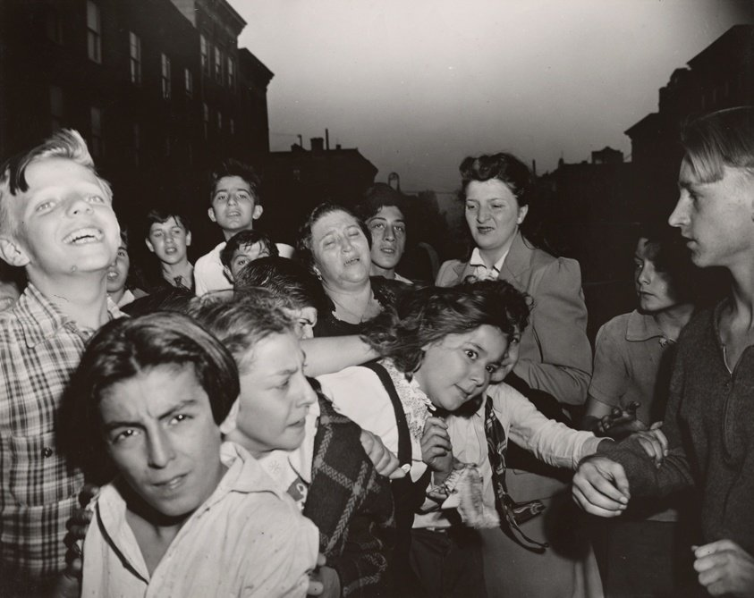

Their First Murder
Weegee (Arthur Fellig) · 1941 · Gelatin silver print · 26.7 × 33.6 cm · Art Institute of Chicago
In copyright. Look and learn: shown for study, not for download.
From 1938 Weegee was the only freelance newspaper photographer in New York with a permit for a police-band radio. He worked at night, listened to the broadcasts and often reached a crime before the police did, then sold the pictures to the tabloids. He had no formal training, and most of his pictures were made with a 4×5 Speed Graphic preset at f/16 and 1/200 of a second, a flashbulb and the focus fixed at ten feet. This print was a gift to Chicago from Mrs. Stuyvesant Peabody.